Healthy Recipes
Breakfast
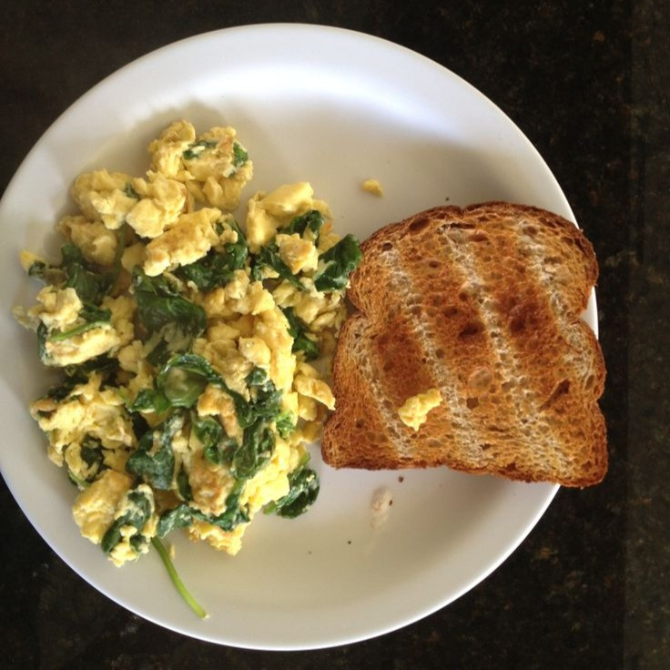
Scrambled Eggs with Spinach & Whole Wheat Toast
Ingredients
- 2 eggs
- ½ cup fresh spinach (chopped)
- 1 tbsp olive oil or butter
- Salt & pepper to taste
- 1 slice whole wheat toast
Instructions
- Heat olive oil or butter in a pan over medium heat.
- Add spinach and sauté for 1-2 minutes until wilted.
- In a bowl, whisk eggs with a pinch of salt and pepper.
- Pour eggs into the pan and stir gently until cooked.
- Serve with whole wheat toast.
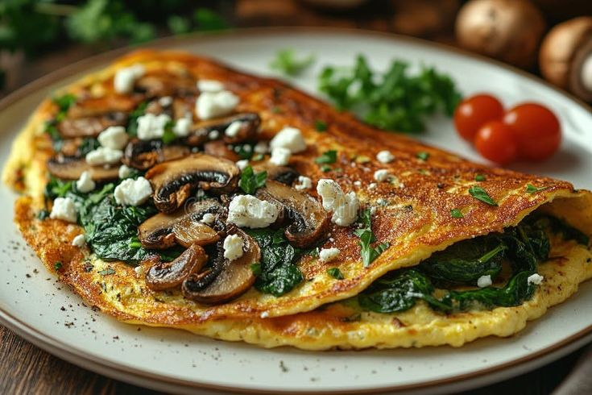
Omelet with Mushrooms, Feta Cheese & Whole Wheat Toast
Ingredients
- 2 whole eggs + 2 egg whites
- ½ cup mushrooms (sliced)
- 30g feta cheese (crumbled)
- 1 tsp olive oil
- 1 slice whole wheat bread
- Salt & black pepper
Instructions
- Heat olive oil in a pan and sauté mushrooms for 2-3 minutes.
- Whisk eggs and pour over the mushrooms.
- Cook for 2-3 minutes, then sprinkle feta cheese on top.
- Fold the omelet and cook for another minute.
- Serve with whole wheat toast.
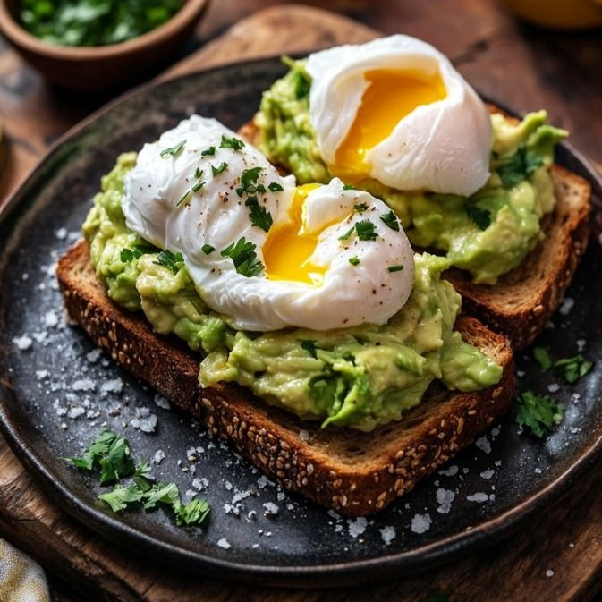
Avocado Toast with Poach Eggs
Ingredients
- 1 slice whole wheat bread
- ½ avocado (mashed)
- 1 egg (poached)
- Salt & pepper to taste
- Red pepper flakes (optional)
Instructions
- Toast the whole wheat bread.
- Spread mashed avocado on top, season with salt and pepper.
- Poach an egg (boil water, swirl, drop the egg in, cook for 3-4 mins).
- Place the poached egg on the avocado toast and sprinkel red pepper flakes.
Scrambled Eggs with Mushroom & Whole Wheat Roti
Ingredients
- 2 eggs
- ½ cup mushrooms (sliced)
- 1 tbsp olive oil
- Salt & pepper to taste
- 1 whole wheat roti
Instructions
- Heat oil in a pan and saute mushrooms for 2-3 minutes.
- Whisk eggs with salt and pepper, then add to the pan.
- Stir gently until Scrambled and fully cooked.
- Serve with a whole wheat roti.
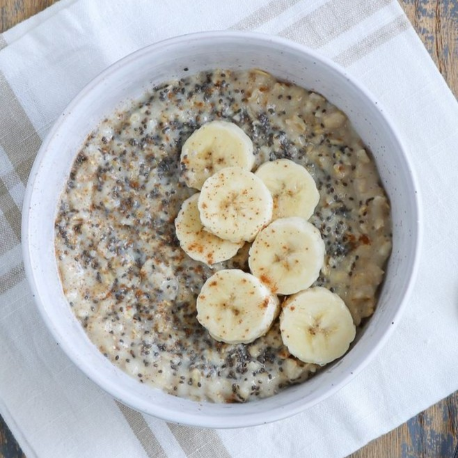
Oatmeal with Chia Seeds, Banana & Protein Pwoder
Ingredients
- ½ cup rolled oats
- 1 cup milk or water
- 1 tbsp chia seeds
- ½ banana (sliced)
- 1 scoop protein powder
- 1 tsp honey (optional)
Instructions
- Cook oats with milk/water over medium heat for 5 minutes, stirring occasionally.
- Stir in chia seeds and protein powder, then remove from heat.
- Top with banana slices and honey.
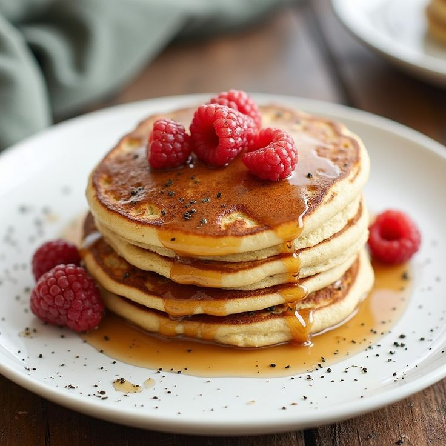
Protein Pancakes with honey
Ingredients
- ½ cup oats (blended into flour)
- 1 scoop protein powder
- 1 egg
- ½ cup milk or almond milk
- ½ tsp baking powder
- 1 tsp honey for topping
- Berries (optional)
Instructions
- Blend all ingredients into a smooth batter. (except honey)
- Heat a pan and cook small pancakes for 2 minutes per side.
- Top with fresh berries
- Drizzle with honey and serve.
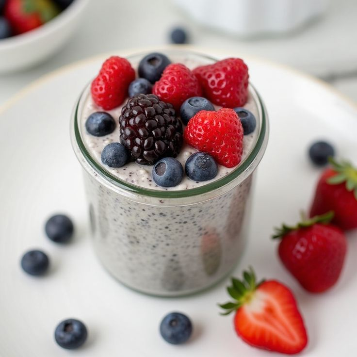
Chia Pudding with Almond Milk and Berries
Ingredients
- 3 tbsp chia seeds
- 1 cup almond milk
- 1 tbsp honey or maple syrup
- ½ cup mixed berries (strawberries, blueberries, raspberries)
Instructions
- Mix chia seeds, almond milk and honey in a jar.
- Let it sit for at least 4 hours or overnight in the fridge.
- Top with fresh berries before serving.
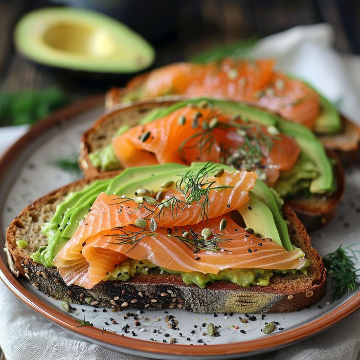
Avocado Toast with Smoked Salmon
Ingredients
- 1 slice whole wheat bread
- ½ avocado (mashed)
- 50g smoked salmon
- ½ tsp lemon juice
- Black pepper
Instructions
- Spread mashed avocado on top, add lemon juice and black pepper.
- Layer smoked salmon over the avocado.
Ingredients
Instructions
Lunch
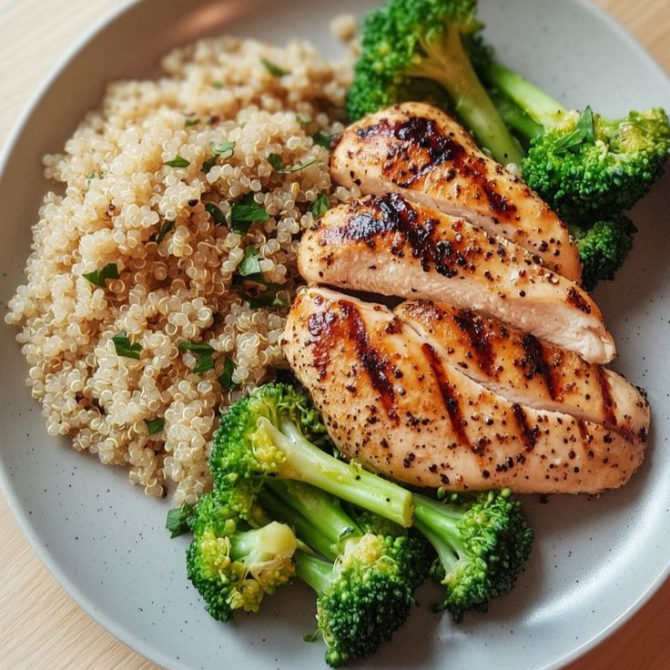
Grilled Chicken, Brown Rice and Broccoli
Ingredients
- 150g chicken breast
- ½ cup brown rice
- 1 cup broccoli (steamed)
- 1 tbsp olive oil
- Salt, pepper, garlic powder and paprika
Instructions
- Season the chicken with salt, pepper, garlic powder, and paprika.
- Grill on medium heat for 6-7 minutes per side.
- Cook brown rice as per package instructions.
- Steam broccoli for 5 minutes and drizzle with olive oil.
- Serve together.
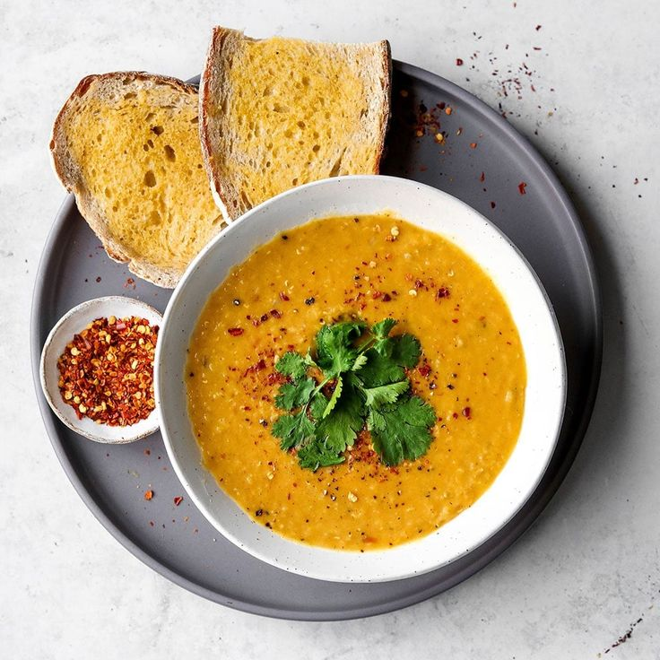
Lentil Soup with Whole-Grain Bread
Ingredients
- ½ cup lentils
- 1 cup vegetable broth
- ½ onion (chopped)
- 1 tomato (diced)
- 1 garlic clove (minced)
- 1 tsp olive oil
- Whole-grain bread
Instructions
- Saute onion and garlic in olive oil.
- Add lentils, tomato, and vegetable broth.
- Simmer fot 20-25 minutes until lentils are soft.
- Serve with whole-grain bread.
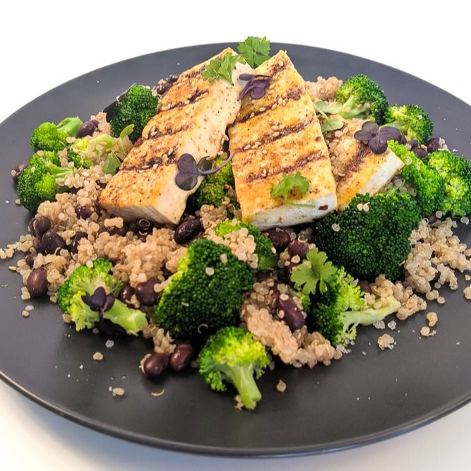
Brown Rice with Grilled Tofu and Veggies
Ingredients
- 100g tofu (sliced)
- ½ cup brown rice
- 1 cu mixed veggies (bell pepper, zucchini, carrots)
- 1 tbsp soy sauce
- 1 tsp olive oil
Instructions
- Grill tofu with a little soy sauce for 2-3 minutes per side.
- Cook brown rice as per package instructions.
- Saute veggies in olive oil for 5 minutes.
- Serve together.
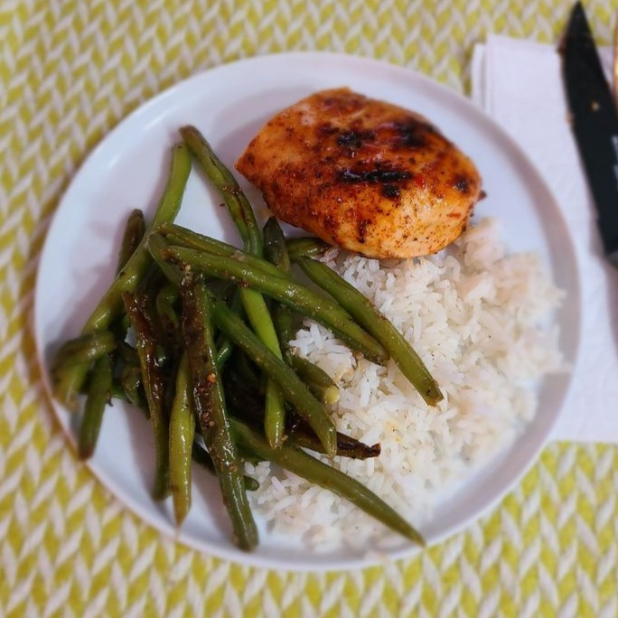
Grilled Turkey Breast, Quinoa, and Green Beans
Ingredients
- 150g turkey breast
- ½ cup quinoa
- 1 cup green beans
- Salt, pepper and rosemary
Instructions
- Season turkey with salt, pepper, and rosemary.
- Grill for 5-6 minutes per side.
- Cook quinoa as per package instructions.
- Saute green beans in olive oil for 3-4 minutes.
- Serve together.
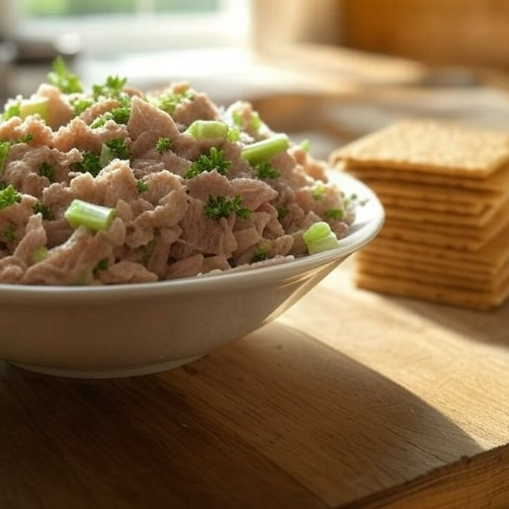
Tuna Salad with Whole Wheat Crackers
Ingredients
- 1 can tuna (in water, drained)
- 2 tbsp Greek yogurt or light mayo
- ½ cup chopped cucumber and bell peppers
- 1 tsp lemon juice
- Salt & pepper
- Whole wheat crackers
Instructions
- Mix tuna, Greek yogurt, lemon juice, cucumber, bell peppers, salt, and pepper.
- Serve with whole wheat crackers.
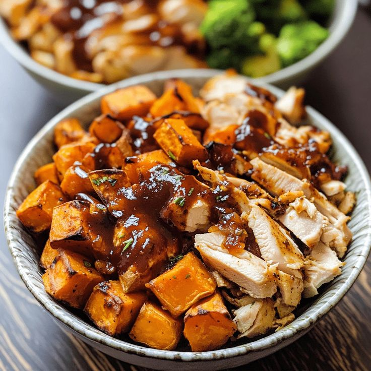
Grilled Chicken with Roasted Sweet Potatoes
Ingredients
- 150g chicken breast
- 1 medium sweet potato (cubed)
- 1 tsp olive oil
- Salt, pepper and paprika
Instructions
- Season chicken and grill for 6-7 minutes per side.
- Toss sweet potato cubes with olive oil, salt and paprika.
- Roast at 200°C (400°F) for 20-25 minutes.
- Serve together.
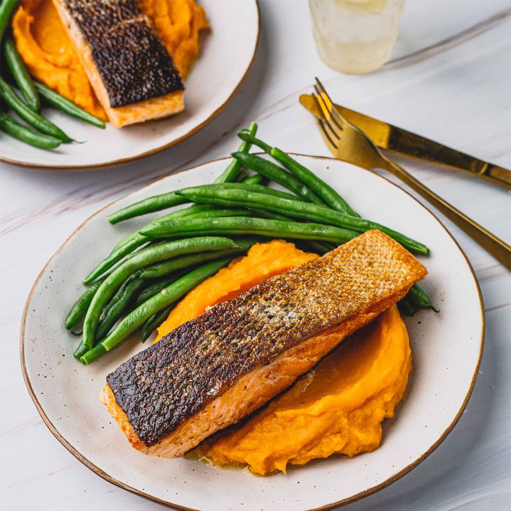
Baked Fish with Mashed Sweet Potatoes
Ingredients
- 150g fish fillet
- 1 medium sweet potato
- 1 tsp olive oil
- Salt, pepper and garlic powder
Instructions
- Season fish with salt, pepper and garlic powder.
- Bake at 180°C (350°F) for 15-20 minutes.
- Boil and mash sweet potato with a little live oil.
- Serve together.
Dinner
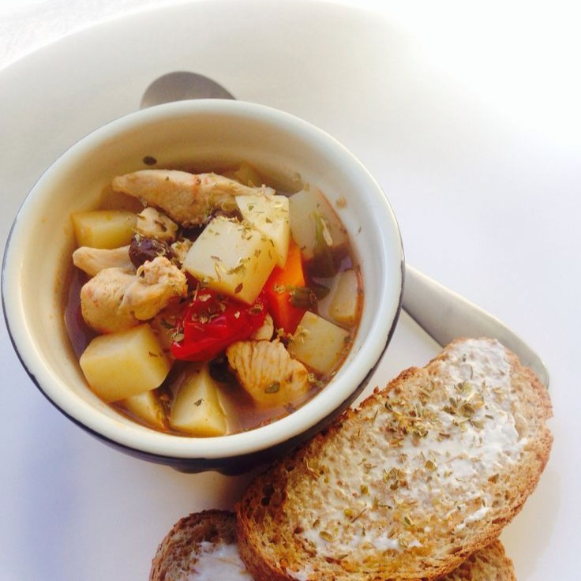
Chicken Soup with Whole Wheat Bread
Ingredients
- 150g chicken breast (shredded)
- 2 cups chicken broth
- ½ cup carrots (diced)
- ½ cup celery (diced)
- ½ onion (chopped)
- 1 garlic clove (minced)
- 1 tsp olive oil
- Salt & pepper
- 1 slice whole wheat bread
Instructions
- Heat olive oil in a pot, sauté onion, garlic, carrots, and celery.
- Add chicken broth and shredded chicken.
- Simmer for 15-20 minutes.
- Season with salt and pepper.
- Serve with whole wheat bread.
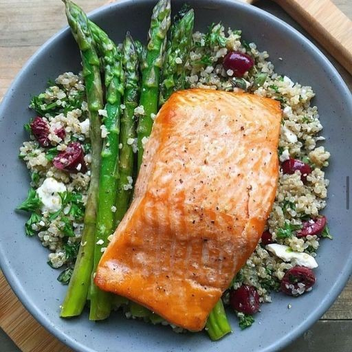
Baked Salmon with Quinoa and Asparagus
Ingredients
- 150g salmon fillet
- ½ cup quinoa
- 1 cup asparagus
- 1 tsp olive oil
- Salt, pepper, garlic powder and lemon juice
Instructions
- Preheat oven to 180°C (350°F).
- Season salmon with salt, pepper, garlic powder and lemon juice.
- Bake for 15-20 mins.
- Cook quinoa.
- Drizzle asparagus with olive oil, season with salt and bake for 10 mins.
- Serve together.
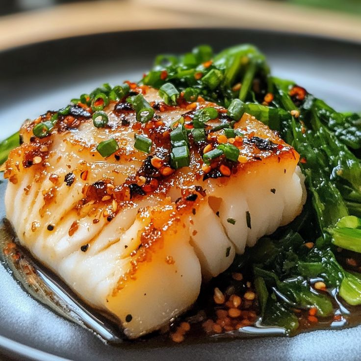
Baked Cod with Garlic Butter and Roasted Cauliflower
Ingredients
- 150g cod fillet
- 1 cup cauliflower florets
- 1 tsp butter (melted)
- 1 garlic clove (minced)
- Salt, black pepper, and lemon juice
Instructions
- Preheat oven to 180°C (350°F).
- Mix butter, garlic, and lemon juice, and brush onto cod fillet.
- Bake for 15-20 minutes.
- Toss cauliflower with olive oil and roast for 20 minutes.
- Serve together.

Chicken and Vegetable Stir-Fry
Ingredients
- 150g chicken breast
- 1 cup mixed vegetables (bell peppers, carrots, snow peas)
- 1 tbsp soy sauce
- 1 tsp olive oil
- 1 garlic clove
- ½ tsp ginger
Instructions
- Heat oil in a pan add garlic and ginger.
- Add chicken and stir-fry for 5-6 mins until cooked.
- Add vegetables and soya sauce, stir-fry for another 3-4 mins.
- Serve hot.
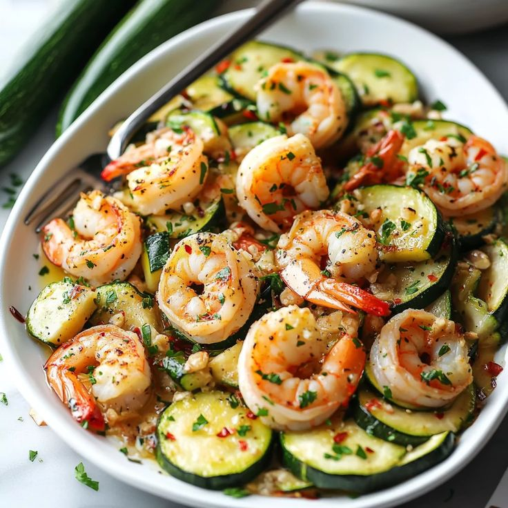
Grilled Shimp with Roasted Zucchini
Ingredients
- 150g shrimp (peeled)
- 1 medium zucchini (sliced)
- 1 tsp olive oil
- Salt, pepper, and garlic powder
- ½ tsp paprika (optional)
Instructions
- Preheat grill or pan.
- Season shrimp with salt, pepper, garlic powder, and paprika.
- Grill shrimp for 2-3 minutes per side.
- Toss zucchini with olive oil, roast in the oven at 200°C (400°F) for 15 minutes.
- Serve together.
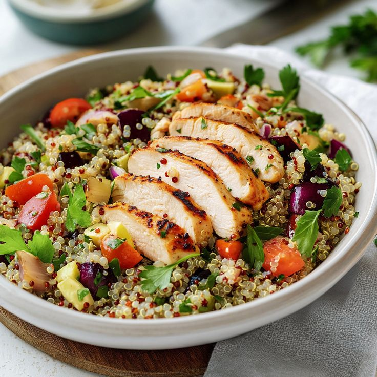
Chicken and Quinoa Salad
Ingredients
- 150g cooked chicken breast
- ½ cup cooked quinoa
- 1 cup mixed greens (lettuce, spinach, arugula)
- ½ cup cherry tomatoes (halved)
- 1 tbsp olive oil
- 1 tsp lemon juice
- Salt & pepper
Instructions
- In a bowl, mix cooked quinoa, chicken, greens, and tomatoes.
- Drizzle with olive oil and lemon juice, season with salt and pepper.
- Toss and serve.
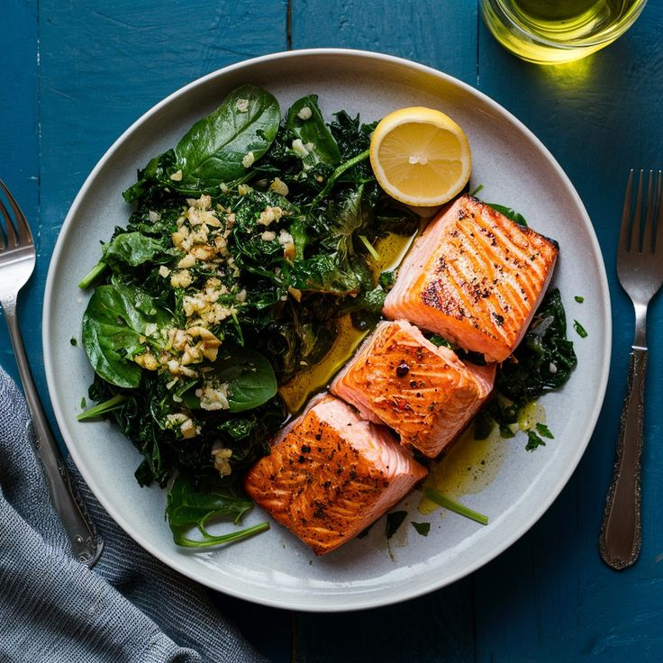
Grilled Salmon with Steamed Spinach
Ingredients
- 150g salmon fillet
- 1 cup fresh spinach
- 1 tsp olive oil
- Salt, pepper, and lemon juice
Instructions
- Season salmon with salt, pepper, and lemon juice.
- Grill for 4-5 minutes per side.
- Steam spinach for 2-3 minutes and drizzle with olive oil.
- Serve together.
Smoothie
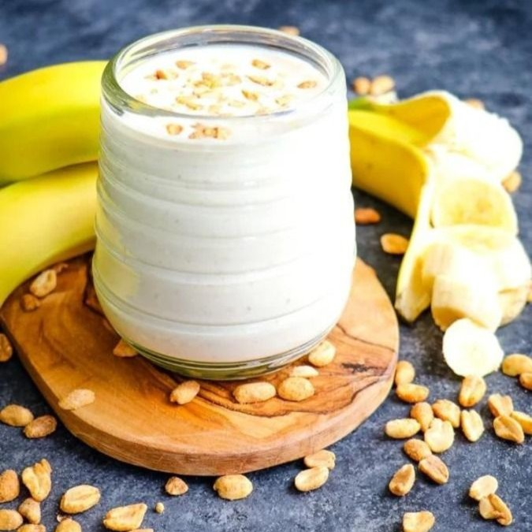
Greek Yogurt, Banana, Peanut Butter, and Almond Milk
Ingredients
- ½ cup Greek yogurt
- 1 banana
- 1 tbsp peanut butter
- 1 cup almond milk
- ½ cup ice cubes (optional)
Instructions
- Blend all ingredients until smooth.
- Pour into a glass and enjoy!
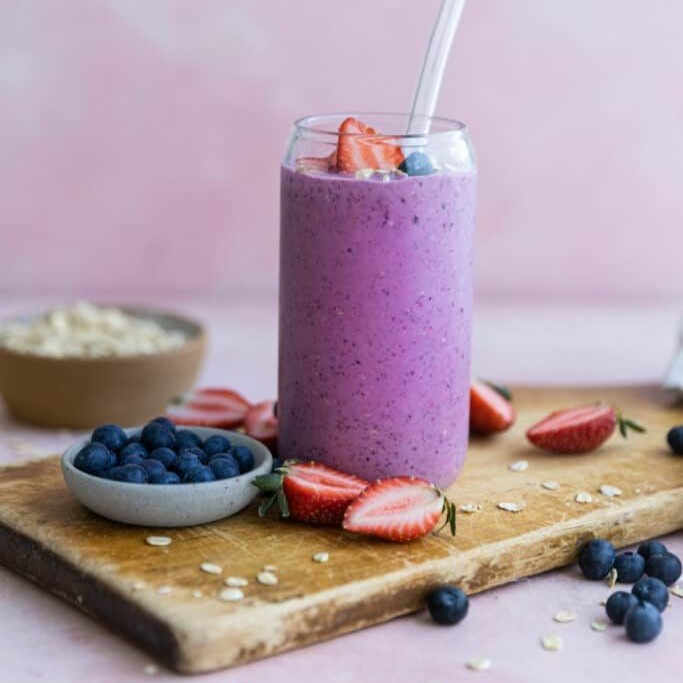
Ingredients
- ½ cup Greek yogurt
- ¼ cup rolled oats
- ½ cup mixed berries (strawberries, blueberries, raspberries)
- 1 cup almond milk
Instructions
- Blend all ingredients until smooth.
- Serve immediately.